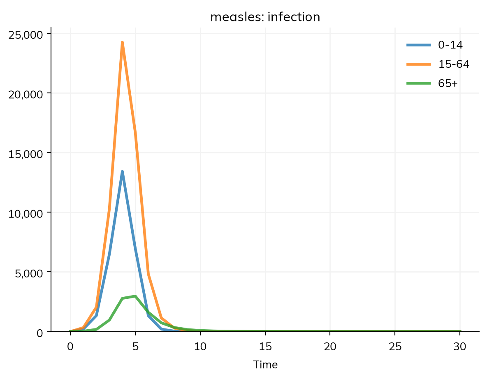

The parameters of a model are the numbers in it: transmission rates, durations, shares, and the like. This page covers where they live, their units, how to name them so they can be documented, changed, and fitted, and the forms a value can take: a number, a value for each group, a value that changes over time, or one that varies between people.
Values live in the model
In a declared disease, a value lives where it is used. There is no separate block of parameters to fill in: each number becomes a parameter, named after its role:
import starsim as ssS, I, R = ss.states('S I R')infection = S >> I @1.9*Irecovery = I >> R @ ss.days(8)measles = ss.Disease(infection, recovery, init_prev=0.001)measles.pars
Starsim kernels: Rust, OUT OF DATE (built before its source last changed, so results may be wrong): run "./build" in starsim/solvers/rust/
The number that multiplies a source of infection is beta (named by its transition, beta_infection, only where two would have the same name). A duration is named by the state it is the time in (dur_E, dur_I), or by its transition if people can leave that state after more than one duration (dur_recovery, dur_death), and a rate by its transition (rate_death). What a number means is given by where it is: after @ and multiplying I, a rate; as init_prev=, a share of the population.
Units of time
A typed value says its unit: ss.days(8) is a duration, and ss.perday(1.9), ss.peryear(0.02) are rates. A bare number takes the unit of the model, which is the unit of its typed values: here days, from ss.days(8), so β = 1.9 is per day. The rates of births and deaths don’t count, so adding births per year to this model leaves β per day. A model whose other typed values are in different units (a duration in days and another in years) has no single unit for its bare numbers, which is an error that asks for unit=; giving every rate a type avoids it.
Values are converted to the time step of the sim, whatever it is, so the same model can be run with a step of a day or a week. A rate (ss.perday) is a rate, converted exactly. A probability over a period, such as a 10% chance of recovering each day, is written ss.prob(0.1, 'day'), and is converted as a probability: over a week it is 1 − 0.9^7, not 0.7. See Time for durations, rates, and dates.
Named parameters
When a parameter is to be documented, reused, or fitted, give it a name with ss.par(). It behaves like its value in a rate, so it can be used anywhere a number can:
beta = ss.par(1.9, bounds=[1, 3], doc='Transmission rate per day', source='Chosen to give R0 of about 15')dur = ss.par(ss.days(8), bounds=[ss.days(6), ss.days(10)], doc='Infectious period', source='About 4 days either side of the rash')S, I, R = ss.states('S I R')infection = S >> I @ beta*Irecovery = I >> R @ durmeasles = ss.Disease(infection, recovery, init_prev=0.001)measles.pars
The name is taken from the variable (beta), or given with name=.
bounds is the range of plausible values. A parameter with bounds can be fitted: sim.fit() fits every parameter that has bounds to every result that has data (Fitting a model). A value outside its bounds is an error.
doc (what it means) and source (where the value came from) are free text. describe() shows them under the transition that uses the parameter, and they are kept when the model is saved.
prior= gives a distribution of belief about the value, used only in calibration (Gradients).
guessed: every part of the model has a compartmental form
unit
day
from the typed values in the model
Disease 'measles' 3 states, 2 transitions
states
S, I, R
I infectious
init: init_prev = 0.001; the rest in S
infection
S -> I transmission, from I
beta = 1.9 per day, between 1 and 3
Transmission rate per day
source: Chosen to give R0 of about 15
rate = 1.9 × I.n / N
homogeneous mixing
recovery
I -> R spontaneous
time in I ~ exponential(mean = 8 days)
guessed: scalar duration
dur = 8 days, between 6 and 10
Infectious period
source: About 4 days either side of the rash
Mixing and interventions
mixing
homogeneous, 1 contact per day
guessed: no network given
Results and running
results
S, I, R, and one flow per transition; also prevalence
schedule
every day: measles
Notes
note
unit='day' (from the typed values in the model)
Changing a parameter
A parameter can be changed when the sim is made, by name, without changing the model. This is how a set of values for one setting, or a fitted set, is used:
Sim: measles, 100,000 people, as an ODE, days 0 to 50
measles: R0 = 12, with 100 infectious at the start
Done in 0.0019 s; measles: 99,899 infections; at most 70,922 infectious, on day 7
R0 with beta = 1.5: 12.0
With several modules, a parameter’s name is given with its module’s, e.g. pars={'measles.beta': 1.5}. A name that matches no parameter is an error, which lists the names there are, so a misspelled parameter is never silently ignored:
KeyNotFoundError pars= has a value for "betta", which matches no parameter. Parameters are measles.init_prev, measles.beta, measles.dur; did you mean measles.beta?
A parameter can also be changed during a run, from a date or when a condition holds, with ss.modify(); see Interventions.
The forms a value can take
Where a value is given decides what it means; the form it takes is free. Each of these can be a rate, a duration, a share, or a starting value:
Form
Example
Means
A number
1.9
The same for everyone, always (in the model’s unit of time)
lambda sim: 1.9 if sim.now < ss.date('2025-03-01') else 1.2
Worked out at each step
A distribution
ss.lognorm_ex(mean=ss.days(8), std=ss.days(2))
Varies between people
A function of the sim and the people
lambda sim, uids: ...
One value for each person (agents only)
Any of these can be wrapped in ss.par() to give it a name, bounds, or a source. The sections below cover each kind.
Values for each group
ss.by() gives a value for each level of a stratification. Here children (0–14) are the most likely to be infected, and older adults the least:
def make_measles(beta): S, I, R = ss.states('S I R') infection = S >> I @ beta*I recovery = I >> R @ ss.days(8) measles = ss.Disease(infection, recovery, init_prev=0.001, name='measles') measles.stratify(age={0: 0.3, 15: 0.6, 65: 0.1}) # Ages 0-14, 15-64, and 65+, with the share in eachreturn measlesbetas = {'The same for everyone': 1.9,'By age': ss.by(age=[2.5, 1.9, 1.0]),}for label, beta in betas.items(): sim = ss.Sim(make_measles(beta), total_pop=100_000, stop=ss.days(30), verbose=0) sim.run() infections = sim.results.measles.infectionprint(label)for age in ['0-14', '15-64', '65+']:print(' Infected by day 3, aged', age, ':', round(infections.select(age=age).cum[3]))sim.results.measles.infection.by('age').plot()
The same for everyone
Infected by day 3, aged 0-14 : 5349
Infected by day 3, aged 15-64 : 10698
Infected by day 3, aged 65+ : 1783
By age
Infected by day 3, aged 0-14 : 8032
Infected by day 3, aged 15-64 : 12652
Infected by day 3, aged 65+ : 1172

With β by age, children are infected sooner, and older adults later, than with the same β for everyone; with an R0 this high, nearly everyone is infected within a week or two either way. The plot shows new infections by age group with β by age.
Here the values are per day, and mixing is homogeneous, so a higher β means a higher rate of infection for susceptible people in that group. The values can also be given by label (ss.by(age={'0-14': 2.5, ...})), as a table, or for several dimensions at once. See Stratification. They can also come from code, as a function of the sim that gives one value per level, worked out at each step: ss.by(patch=fn), e.g. a biting rate in each place from mosquitoes written as code, whatever other dimensions the sim has.
Values that change over time
Contact patterns, reporting, and treatment change over time, and so do the parameters that stand for them. A value can be a time series (ss.timeseries()), held or interpolated between given dates; a smooth yearly cycle (ss.seasonal()); or a function of the sim, worked out at each step. Each goes wherever a number would, in a rate, a share, or a starting value. Time covers them, with examples of measles with and without school terms. A change made by an intervention, from a date or when a condition holds (ss.change(), ss.modify()), is covered in Interventions.
Values that vary between people
A distribution, given as a value, gives each person their own value: recovery = I >> R @ ss.lognorm_ex(mean=ss.days(8), std=ss.days(2)) gives each person their own infectious period. For durations, a compartmental run represents the distribution with stages; see Durations and Distributions.
A function of the sim and the people, fn(sim, uids), returns one value for each person it is given, and can use anything about them. Here the infectious period is longer for children under 5 (a made-up example):
def dur_fn(sim, uids): age = sim.people.age[uids]return ss.days(8+4*(age <5)) # 12 days for children under 5, 8 for everyone elseS, I, R = ss.states('S I R')infection = S >> I @1.9*Irecovery = ss.Transition(I, R, dur=ss.constant(dur_fn)) # Each person's own duration, as givenmeasles = ss.Disease(infection, recovery, init_prev=0.001)sim = ss.Sim(measles, n_agents=10_000, stop=ss.days(50), verbose=0)sim.run()S, I, R = ss.states('S I R')same = ss.Disease(S >> I @1.9*I, ss.Transition(I, R, dur=ss.constant(ss.days(8))), init_prev=0.001, name='measles')base = ss.Sim(same, n_agents=10_000, stop=ss.days(50), verbose=0)base.run()print('Still infectious on day 18, with 8 days for everyone:', round(base.results.measles.I[18]))print('Still infectious on day 18, with 12 days under 5:', round(sim.results.measles.I[18]))
Still infectious on day 18, with 8 days for everyone: 72
Still infectious on day 18, with 12 days under 5: 677
Nearly everyone is infected in the first week or two either way, but with the longer infectious period of young children, the epidemic takes several days longer to end. Children under 5 are only a few percent of the population, so the effect is only as large as the group the function applies to.
A rate is worked out for the people who could take it at each step (everyone in its source state), so a function in a rate is called for them, every step. Multiplied by a condition, it is called only for the people the condition holds for, and is 0 for the others: with rate = ss.par(fn, name='infant')*(ss.ppl.age < 1), fn is given only the children under 1, and need not check their ages itself.
A function that uses uids, or anything else about individual people, needs agents, so a model with one runs as agents. Where the same thing can be said by group (ss.by(age=...) on a stratified model), it runs under every solver.
A distribution in a rate gives each person their own rate: in S >> I @ ss.gamma(a=0.5, scale=3.8)*I, each person has their own transmission rate (the same as ss.Transition(S, I, rate=ss.gamma(a=0.5, scale=3.8)*I)). A distribution on its own after @ is a dwell time; times a state, it is a rate.
Parameters of modules written as code
A module written as code (see Custom modules) declares its parameters, and their defaults, in its __init__() with self.define_pars(), and then takes the values it was given with self.update_pars():
class Antibodies(ss.Module):def__init__(self, **kwargs):super().__init__()self.define_pars( half_life = ss.days(60), # How quickly antibodies decline boost =1.0, # The antibody level just after recovery )self.update_pars(**kwargs)antibodies = Antibodies(half_life=ss.days(90))print(antibodies.pars)
Pars(half_life=days(90), boost=1.0)
The point of define_pars() is to set the ground truth for what each parameter is. The values given to the module are checked against it, so a misspelled name is an error:
ValueError 1 unrecognized argument for antibodies: half_lfe
A value can be given in any form that fits the default. For a parameter whose default is a distribution, a number sets the distribution’s main value, and another distribution replaces it. For example, in the library’s SIR written as code (ssl.AgentSIR), the chance of death is a Bernoulli distribution (a yes or no for each person), so it can be given as a probability or as another Bernoulli distribution, but not as a distribution of another kind, since what the module does with it (picking who dies) needs a yes or no:
import starsim.library as sslprint(ssl.AgentSIR(p_death=0.02).pars.p_death) # A probability: the p of the defaultprint(ssl.AgentSIR(p_death=ss.bernoulli(p=0.2)).pars.p_death) # Another Bernoulli distributionprint(ssl.AgentSIR(dur_inf=ss.normal(loc=ss.years(4), scale=ss.years(1))).pars.dur_inf) # Any distribution of durationstry: ssl.AgentSIR(p_death=ss.lognorm_ex(4))exceptExceptionas e:print(type(e).__name__, e)
ss.bernoulli(p=0.02)
ss.bernoulli(p=0.2)
ss.normal(loc=ss.years(4), scale=ss.years(1))
TypeError Bernoulli distributions can only be changed to another Bernoulli distribution or ss.choose_n(): <class 'starsim.distributions.lognorm_ex'> is invalid
A parameter of a distribution can itself be a function of the sim and the people it is drawn for, which is how a module written as code makes a value depend on age, sex, or anything else the sim knows; see Distributions.
Pitfalls
A bare number in the wrong unit. A bare number is in the model’s unit of time: in a model whose unit is years, I >> R @ 0.125 is 0.125 per year. Typed values (ss.perday(0.125), ss.days(8)) don’t depend on it.
Changing the model instead of the sim. To try another value, give it to the sim (pars=dict(beta=1.5)) rather than changing the disease, which every sim made from it shares.
A distribution as a value or as a prior. A distribution as a value is variation between people. Uncertainty about a single value is a prior, ss.par(1.9, prior=...), used only in calibration.
A function where a time series would do. A function can’t be printed by describe(), exported to another framework, or written out as equations.
Further reading
epiparameter: a library of epidemiological parameters (incubation periods, serial intervals, and the like) from the literature, in R